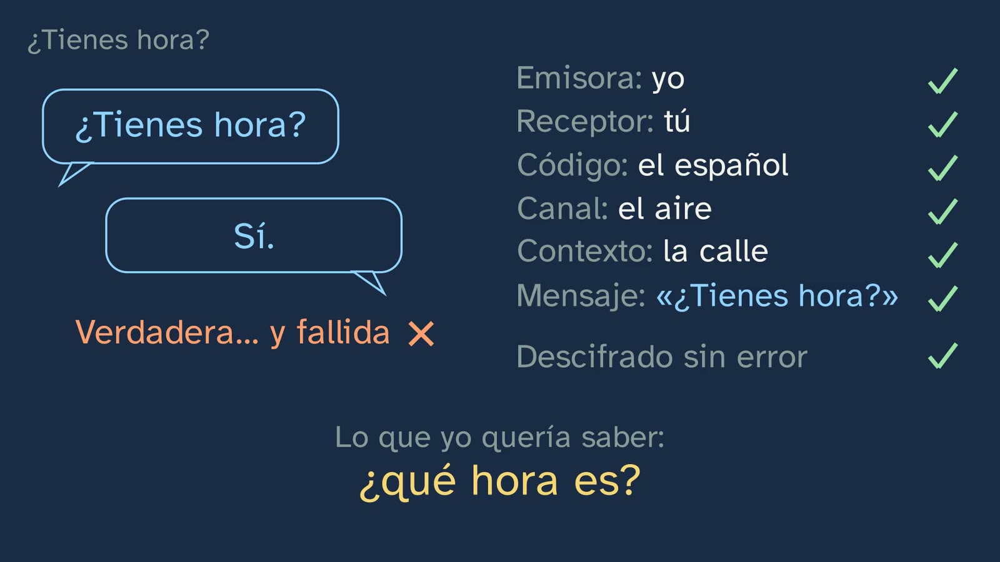
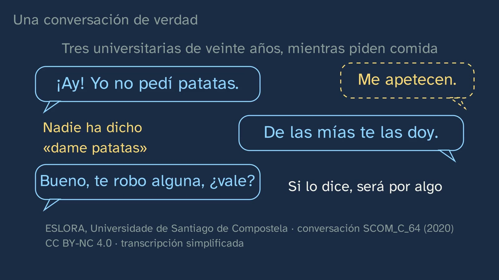
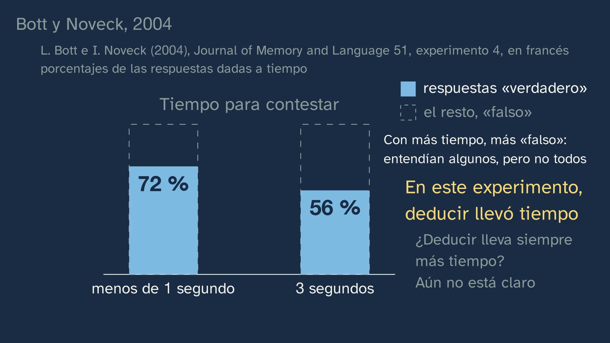

Got the time?
In a nutshell
The class opens the subject with a four-syllable question: «¿Tienes hora?» (literally "Do you have [the] time?", the everyday Spanish way of asking what time it is, like "Have you got the time?"). Anyone who answers «sí» ("yes") and says no more has answered exactly what the words say and yet something has gone wrong. To see what, Vera retrieves the scheme of the elements of communication (sender, receiver, message, code, channel and context), applies it to that question and finds that everything works and communication fails: decoding is not enough. A second example, which students predict («¿Vienes a la fiesta del sábado?» — «Tengo examen el lunes»: "Are you coming to the party on Saturday?" — "I've got an exam on Monday"), brings out the idea behind the whole topic, with the two terms the curriculum itself uses: one thing is the meaning (significado), what the words say, and another the sense (sentido), what they communicate in their situation. The leap between the two is an inference. The heart of the class is how that leap is made: Paul Grice's cooperative principle, quoted from his text with its page, his four categories (quantity, quality, relation and manner) and the implicature, reasoned out in three steps. Then come three pieces of evidence that this is not just theory: a real conversation from the ESLORA corpus, in which nobody says "give me some fries"; the cancellation test ("…but I'm going to the party anyway"), and an experiment with its prediction (Bott and Noveck, 2004): with less than a second to answer, "some elephants are mammals" got more "true" responses than with three. Students try it out on Grice's reference letter, which leaves out the only thing that matters, and on irony. The underlying mistake is taken apart at the end: believing that the sense is in the words and that communicating is just encoding and decoding. And the class shows its dangerous side, with an invented advert that makes you understand what it does not say.
Objective. By the end, students will be able to tell what the words of an utterance say (its meaning) from what it communicates in its situation (its sense), explain with the cooperative principle how we work out what goes unsaid, and check with the cancellation test what was in the words and what was worked out.
For readers outside Spain: the Bachillerato is the last two years of secondary school (ages 16–18). Spanish Language and Literature I is a core subject, taken by every student in the first year. The video is in Spanish, with English subtitles; the images on this sheet come from the video and keep their Spanish text. The class is about Spanish, so the examples stay in Spanish here, with an English gloss. Grice's words are quoted in his original English; in the video they appear in our Spanish translation.
Curriculum
Spain's Royal Decree 243/2022, Spanish Language and Literature I, a core subject in the first year of Bachillerato (consolidated text in the Official State Gazette, BOE, checked on 29–30/09/2026; its latest update, of 02/07/2026, does not touch the Language annex). Our translation of the official Spanish text.
| Element | What the decree says | Where the class works on it |
|---|---|---|
| Core knowledge (block B, "Communication", 1. Context) | "Components of the communicative event: degree of formality of the situation and its public or private nature; social distance between the interlocutors; communicative purposes and interpretation of intentions; channel of communication and non-verbal elements of communication." | Its centre: "communicative purposes and interpretation of intentions". That is the whole class: what the person asking the time wanted, or the one answering "I've got an exam", or the one writing the letter. The other components (formality, distance, channel, the non-verbal) come in classes 3 to 5 |
| Core knowledge (block B, 3. Processes) | "Formal oral and written interaction. Taking and yielding the floor. Conversational cooperation and linguistic politeness." | Conversational cooperation, with its theory: Grice's cooperative principle and its four categories. Politeness and turn-taking, in classes 3 and 4 |
| Core knowledge (block D, "Reflection on language") | "Drawing one's own conclusions about how the linguistic system works, with a specific metalanguage, from the observation, comparison and classification of communicative units and from the contrast between languages […]" | The method of the class: observing utterances, comparing what they say with what they communicate, manipulating them (the cancellation test) and naming what is seen with its metalanguage: meaning, sense, inference, implicature, maxim. The contrast between languages comes in classes 3 and 4 |
| Specific competence 2 | "To understand and interpret oral and multimodal texts, with special attention to academic texts and those of the media, grasping the general sense and the most relevant information, identifying the point of view and the intention of the sender and assessing their reliability, form and content, in order to build knowledge, to form an opinion and to widen the possibilities of enjoyment and leisure." | Identifying the sender's intention in spoken utterances: the time, the party, the fries. The decree's description of this competence gives the class its two terms: communication is "a constant process of interpreting intentions in which the knowledge shared by the interlocutors comes into play, together with all those contextual and co-textual elements that make it possible to go beyond the meaning of the text and interpret its sense" |
| Specific competence 4 | "To understand, interpret and assess written texts, with a critical sense and different reading purposes, with special attention to academic texts and those of the media, recognising the overall sense and the main and secondary ideas, integrating explicit information and making the necessary inferences, identifying the intention of the sender, reflecting on content and form and evaluating their quality and reliability, in order to respond to diverse communicative needs and interests and to build knowledge." | Inferences, in two written texts: the reference letter and the advert. Its description warns what happens without them: the reader "is limited to the literal interpretation of what is said, unable to grasp ironies, allusions or double meanings, or to gauge the author's communicative intention" |
| Specific competence 9 | "To consolidate and deepen explicit and systematic knowledge of the structure of the language and its uses, and to reflect autonomously on linguistic and discursive choices, with the appropriate terminology, in order to develop linguistic awareness, to increase the communicative repertoire and to improve skills both in oral and written production and in comprehension and critical interpretation." | Explicit knowledge of language use, with its terminology. Its description asks for the pragmatic level to be integrated, and for a method: "the manipulation of utterances, the contrast between sentences, the formulation of hypotheses and rules, the use of counterexamples". The cancellation test is exactly that |
| Specific competence 10 | "To put communicative practices at the service of democratic coexistence, the resolution of conflicts through dialogue and the equal rights of all people, using non-discriminatory language and banishing abuses of power through words, in order to foster a use of language that is not only effective but also ethical and democratic." | Only glimpsed: the advert that makes you understand what it does not say, and the open question. Class 2 comes back to it |
| Criterion 2.1 | "To identify the overall sense, the structure, the relevant information according to communicative needs and the intention of the sender in complex oral and multimodal texts from different spheres, analysing the interaction between the different codes." | Only part of it: the sender's intention, in short spoken exchanges. Complex texts and the interaction between codes come later |
| Criterion 4.1 | "To identify the overall sense, the structure, the relevant information and the intention of the sender of specialised written and multimodal texts, with special attention to academic texts and those of the media, making the necessary inferences and with different reading purposes." | "Making the necessary inferences": what the letter communicates and what the advert wants you to understand. The class supplies the tool; specialised texts come in class 6 |
| Criterion 9.2 | "To explain and argue the interrelation between the communicative purpose and the linguistic choices of the sender, as well as their effects on the receiver, using explicit knowledge of the language and a specific metalanguage." | Why someone chooses "I've got an exam on Monday" rather than "no", or "some" rather than "all", and what effect it has on the listener. Exercises 1 and 2 ask for it in writing, with its metalanguage |
| Criterion 10.1 | "To identify and banish discriminatory uses of language, abuses of power through words and manipulative uses of language, on the basis of reflection on and analysis of the linguistic, textual and discursive elements used, as well as of the non-verbal elements that govern communication between people." | Only "manipulative uses of language": the invented advert, analysed with the tools of the class, and the open question |
What students bring from lower secondary (ESO, ages 12–16): not much, and it is worth knowing where it comes from. The scheme the class retrieves (sender, receiver, message, code, channel and context) is not in the lower-secondary decree: Royal Decree 217/2022 does not list those elements, nor the functions of language. Some regions go further: Madrid's lower-secondary curriculum asks in year 2 for «Análisis de los componentes del hecho comunicativo. Funciones del lenguaje y tipos de textos» (Decree 65/2022), and in the first year of Bachillerato the functions of language are required by Madrid (Decree 64/2022: «Las funciones del lenguaje. Las modalidades textuales»), Andalusia (Order of 30 May 2023) and Castile and León (Decree 40/2022). This class does not cover them; the channel will decide carefully where they go, without squeezing them in. What it asks for, in both cycles and in the same words as the Bachillerato decree, are the "components of the communicative event", among them "communicative purposes and interpretation of intentions"; in reading, its criterion 4.1 already speaks of understanding "making the necessary inferences", and 3.2 of "strategies of conversational cooperation and linguistic politeness". The scheme reaches students through school tradition and textbooks: in our review of the public tables of contents and samples of fifteen first-year Bachillerato textbook series (29–30/09/2026), ten open the year with "Communication" and seven of those repeat that scheme. That is why the class takes it as known (it retrieves it at 0:55), respects it and shows where it falls short. What is new in the Bachillerato is not the content, which is almost the same, but what the decree calls "a greater theoretical and methodological awareness" and "instruments of analysis" (introduction to the subject): here, those of pragmatics.
How the class is built
Video chapters
A little over thirteen minutes, in ten chapters. It follows the channel's learning principles (in Spanish) and what the decree asks of this subject in the Bachillerato: that going deeper than in lower secondary should mean "a greater theoretical and methodological awareness for analysing reality", with "instruments of analysis that help to build and structure explicit knowledge of linguistic phenomena" (introduction to the subject). That is why the class does not revise the scheme of communication: it tests it on a four-syllable utterance, sees that it is not enough and supplies the missing instrument, with its author, his text and a test. It is the first of the topic's seven classes; the third and the seventh are language labs, with real data on how we speak.
| Chapter | What happens | Why this way |
|---|---|---|
| What we'll see | Vera says hello and introduces the topic on the map of its seven classes; two are language labs (the quotation marks). The hook, to camera: «¿Tienes hora?». If you answer "yes" and say no more, you have answered exactly what the words say, and something has gone wrong. | Knowing where you are and where you're going organises what you learn. The hook is an utterance everyone has used: the theory will come to explain something students already know how to do. |
| What you already know | What were the elements of communication? Pause. Sender, receiver, message, code, channel and context. It looks a lot like Roman Jakobson's scheme (1960), and behind it lies an idea: communicating is encoding a message and decoding it. | Retrieving what students know, without belittling it, and naming the idea it carries inside, so that it can be examined. |
| Got the time? | The scheme, applied to the question, which Vera asks viewers to imagine being asked in the street: sender, receiver, code, channel, context and message, all six in place. It is decoded without error, the answer is "yes", and the answer is true… and a failure. No piece is missing, the code has worked and communication has failed. | The problem before the explanation: students watch the tool they had fail before they are given the new one. |
| What goes unsaid | "Are you coming to the party on Saturday?" — "I've got an exam on Monday". Yes or no? Pause. The answer contains no "no" and no party, and we understand "I'm not going". The key to the topic: meaning (what the words say) and sense (what they communicate in their situation). The leap between the two is called inference. | Predicting before seeing. Intuition first, with an example presented as invented; then the decree's two terms. |
| The cooperative principle | How do we make that leap? Paul Grice: when we talk, we take it for granted that the other person is cooperating. The principle, word for word (1975, p. 45), and in plain words. The four categories. The party, reasoned out in three steps, up to the implicature. And the time: "yes" is true, but it fails quantity. | The exact idea, in its author's words and with its page; the board tells the quotation (blue, in quotation marks) from the summary. A fully worked example, step by step, with the example students already know. |
| A real conversation | Three twenty-year-old university students, recorded while ordering food for the ESLORA corpus (University of Santiago de Compostela). The one placing the order says: «¡Ay! Yo no pedí patatas» — «De las mías te las doy» — «Bueno, te robo alguna, ¿vale?» ("Oh! I didn't order fries" — "I'll give you some of mine" — "OK, I'll steal a few, all right?"). Nobody has said "give me some fries". | What has been seen with an invented example, in real words from real speakers, with its reference and its licence on screen. It anticipates the language labs. |
| How do we know? | The cancellation test: what the words say cannot be denied without contradiction ("I've got an exam, but I haven't got an exam"); what was worked out can ("…but I'm going to the party anyway"). And the lab: "some elephants are mammals", true or false? Prediction, and Bott and Noveck's data (2004): 72% "true" with less than a second, 56% with three. In that experiment, working it out took time; whether it always does is not clear. Vera, to camera: the key point so far. | The channel's question, twice: with a test students can do on their own and with an experiment. The prediction comes before the data, and the conclusion comes with its limit. |
| The reference letter | Grice's example (1975, p. 52): a letter for a philosophy job that speaks only of the candidate's English and his attendance. What does it say about him as a philosopher? Pause. Grice's reasoning, summarised: quantity, flouted in plain view. Irony does the same with quality (p. 53, with an adapted example). | An example with gaps, which students complete. Flouting a maxim in plain view is not communicating badly: it is another way of communicating. |
| The underlying mistake | Believing that the sense is in the words and that communicating is just encoding and decoding. The scheme is not wrong: what fails is believing it is enough. Sperber and Wilson gave the idea a name: the code model, as opposed to the inferential model. And its dangerous side: an invented advert, «Ningún detergente lava más blanco que este» ("No detergent washes whiter than this one"), which is true even if they all wash the same. | The mistake, stated and taken apart with the four cases the class has already seen. The advert shows what all this is for outside the classroom. |
| Practice and keep thinking | Recap, with a warning that it is a repetition. The four categories, as four tips for writing. Three exercises, the open question (if someone makes you believe something false by saying only true things, have they lied to you?) and the announcement of class 2. Vera says goodbye with the sentence to remember. | Spaced practice: the solutions open the next class. The open question is also in the video's comments. |
Bridges to other subjects. Philosophy: Grice is a philosopher of language, and the difference between what follows from a sentence by logic and what is only given to be understood is his. Mathematics: in logic, "some" means "at least one", and may be all. Contemporary World History: in its class 1, Marc Bloch says that what interests historians in a document is "what it lets us understand, without having meant to say it".

A plan for a 50-minute lesson
| Minutes | What to do |
|---|---|
| 0–5 | No video. On the board: «—¿Tienes hora? —Sí.» (and the person answering walks on). Did they answer well? Everyone writes one sentence and keeps it for the end (it is on the worksheet). |
| 5–13 | Video from 0:00 to 3:29. Pause at 1:07 (the elements of communication: half a minute in writing, then carry on and compare) and at 2:45 (yes or no?: a show of hands, and one more question, which is the good one: "which word in the answer are you relying on?"). |
| 13–21 | Video from 3:29 to 6:27: Grice, the four categories, the three steps, the time and the fries. On pausing, in pairs: the first three rows of the worksheet table ("What is said and what is communicated"). |
| 21–29 | Video from 6:27 to 9:06: the cancellation test, the elephants and Vera's midpoint. Pause at 7:34 (true or false?: vote by show of hands and write the count on the board) and at 8:20 (the prediction, also by show of hands). After the data: does our count look like the experiment's? Why can't we conclude anything from a show of hands? |
| 29–41 | The activity: the cancellation lab. |
| 41–47 | Video from 9:06 to 11:46: the letter (pause at 9:31 and answer in writing before hearing Grice), irony, the underlying mistake and the advert. Complete the worksheet table. |
| 47–50 | Video from 11:46 to the end (13:30). Reread the sentence from the start: would you change it? The exercises, for homework with the worksheet. |
Typical mistakes and how they are handled
With an honest warning: hardly any of these has been measured with Spanish Bachillerato students. For the first there is a nearby study, on writing; for the third, experiments with adults and with children; the rest are confusions the design anticipates and which, as far as we know, nobody has measured.
- "The sense is in the words: communicating is encoding and decoding". This is the underlying mistake, and the class tackles it head-on (10:36). Sperber and Wilson called it the code model: "communication is achieved by encoding and decoding messages" (Relevance, 2nd ed., 1995, p. 2), and they warn that the idea is so entrenched that it is hard to see it as a hypothesis (p. 6). The closest thing measured with Spanish students concerns writing: in the first year of Bachillerato, the "reproductive" conception (writing is transmitting information) scores 4.04 out of 6, and the "epistemic" one (writing is building knowledge), 4.24, with 163 students (Villalón and Mateos, 2009; Villalón's doctoral thesis, 2010, table 6). The class takes it apart with four cases the scheme cannot explain (the time, the party, the fries and the letter) and takes care of the other half: the code is not superfluous, it is just not enough. Sperber and Wilson say the same: "verbal communication involves both coding and inferential processes" (p. 3). An objection that will come up, and a good one: "but context was already in the scheme". True: the scheme names the situation, and in the chapter "Got the time?" the board ticks it off with the other five («Contexto: la calle», "Context: the street") before concluding that "no piece is missing". The answer is that the scheme is not missing a box but a process: it says what is needed to communicate, not what we do with it. What we do with the situation is reason, and the class calls that inference.
- "If they didn't say it, they didn't communicate it", and its opposite, "everyone understands whatever they like". The first is the literal reader the decree warns about (competence 4). The second appears as soon as inference is discovered: if the sense is not in the words, anything goes. It does not: for Grice, an implicature "must be capable of being worked out" (1975, p. 50), and the hearer relies on data both share: the conventional meaning of the words, the cooperative principle, the context and background knowledge (p. 50). That is why the class reasons out the party in three steps (4:40) and says what both know: that an exam needs preparing and that a party takes up study time. When marking, always ask for the reasoning, not only the conclusion.
- "'Some' means 'not all'". Here the mistake is not understanding "not all", which is what any competent speaker does, but believing that the word says it. The cancellation test shows it: "some elephants are mammals; in fact, all of them are" is not a contradiction (7:40). It is the only point in the class with experiments behind it: in Bott and Noveck's (2004, experiment 4, in French), with three seconds to answer, 44% of the responses to sentences like that were "false". And a curiosity the class leaves out: faced with "some giraffes have long necks", 89% of 7- and 8-year-olds accepted it, against 41% of fifteen adults (Noveck, 2001, experiment 3, in French). That does not mean children fail to notice that the sentence falls short: when Katsos and Bishop (2011) let them choose an intermediate reward, almost all of them noticed; they tolerated it. A good bridge to Mathematics: in logic, "some" is "at least one".
- "The maxims are rules of good manners: whoever breaks them speaks badly". The class calls the maxims "rules" (4:05) and ends by turning the four categories into four tips for writing (11:46), so the misunderstanding comes easily. Grice is not writing a style guide: he describes what we take for granted in order to interpret one another. He distinguishes several ways of failing to fulfil a maxim (1975, p. 49): violating it quietly, in which case the speaker "will be liable to mislead"; opting out ("I cannot say more; my lips are sealed"); a clash between two maxims; and flouting it, that is, blatantly failing to fulfil it, in order to communicate something. The letter and irony are of this last kind: they communicate not in spite of the failure but because it is blatant. And the writer is still cooperating: "though some maxim is violated at the level of what is said, the hearer is entitled to assume that that maxim, or at least the overall Cooperative Principle, is observed at the level of what is implicated" (p. 52). Besides, cooperating is not being kind or agreeing: politeness is something else, and comes in class 4.
- Confusing conversational inference with logical deduction. The video uses the Spanish verb deducir in its everyday sense, the first in the Spanish Royal Academy's dictionary ("to draw a conclusion from something", with the example «¿Qué podemos deducir de sus palabras?», "What can we deduce from his words?"). In Philosophy and Mathematics students will hear deducir in its strict sense (the third: "to derive a particular truth from a general principle"), and there the opposite of the class's summary holds: what is really deduced cannot be cancelled. If all elephants are mammals, some are, and no "but" will do. An implicature is precisely the inference that does admit a "but": probable, reasonable and revisable. The video gives the contrast without naming it (7:40: "in logic" versus "in conversation"). In class it is better to use inferir and inferencia (infer, inference), which are also the decree's words ("making the necessary inferences"), and to say it once: from "all" to "some" we go by logic; from "some" to "not all", by conversation. Exercise 2 puts it to the test.
- "Irony is saying the opposite", or "whoever is being ironic is lying". The class gives Grice's explanation and attributes it ("that is how Grice explained it", 10:13): the ironic speaker says something that speaker and hearer both know the speaker does not believe, and something else is understood; most obviously, its contradictory (1975, p. 53). It is not a lie, because a liar hides the fact that they don't believe what they say, and an ironic speaker displays it. And it is not the whole story: an ironic speaker does more than mean the opposite. Grice himself later recognised that they pretend to assert what they say and express more than disbelief; Sperber and Wilson call it a "dissociative attitude—wry, skeptical, bitter, or mocking" (as summarised by W. Davis in the Stanford Encyclopedia of Philosophy, "Implicature", §12). It is enough that students do not leave believing that every irony is resolved by turning the sentence round.

Questions and solutions
Stop and think (in the video)
- What were the elements of communication? (0:55; the pause, at 1:07) The video's: sender (who speaks), receiver (who listens), message (what is said), code (the language they share), channel (what it travels through: the air, a screen) and context (the situation). Lists of seven are fine too, separating the "referent" (what is being talked about) from the "situation": depending on the textbook students learned from, "context" is one, the other or both. The scheme "looks a lot like" Jakobson's, and is not the same: his six factors are addresser, addressee, message, context, code and contact, and his "context" is what the message refers to, not the situation ("a CONTEXT referred to"; Jakobson, 1960, p. 353). A point for teachers: when the video says "that's why it's called the code model", what gets that name is the idea that communicating is encoding and decoding, not Jakobson's scheme, which also reckons with context.
- «¿Tienes hora?» — «Sí». What has gone wrong? (1:42) The scheme cannot explain it: the message is decoded without error and the answer is true. The class resolves it at 5:17: "yes" gives less information than is needed (quantity); so whoever answers just "yes" either has not understood what was being asked of them, or does not want to cooperate, or is joking. The video explains why the answer fails, but takes for granted what was needed. The step left implicit, in case someone asks, is the same as with the party: the person asking is cooperating; asking someone whether they have the time, just to know, would be beside the point (relation); so they are asking for something more: they want to be told it. How a question can count as a request is class 2. Two details for fine-tuning. One: the code alone does not even settle what the words say, because in Spanish hora is also an appointment (pedir hora, dar hora, in the Academy's dictionary): in a dentist's waiting room, «¿tienes hora?» asks something else. Two: the board gives "the air" as the channel and "the street" as the context, because Vera asks viewers to imagine her asking the question in the street, face to face; between her and whoever is watching the video, the channel is a screen.
- "Are you coming to the party on Saturday?" — "I've got an exam on Monday". Is that a yes or a no? (2:28; the pause, at 2:45) The natural reading is no, and the video puts it carefully: "if you understood that they're not going". The answer speaks of an exam and a Monday; there is no "no" and no party in it (2:50). The best answers go beyond "it's a no": they say where they get it from ("an exam needs preparing", "a party takes up time") or notice that it is not certain ("they could add: but I'm going anyway"). That second observation is the cancellation test ahead of time: it deserves to be said so. The example is invented, and the board says so.
- How do we make that leap? (3:29) With the cooperative principle: "Make your conversational contribution such as is required, at the stage at which it occurs, by the accepted purpose or direction of the talk exchange in which you are engaged" (Grice, 1975, p. 45); the video gives it in our Spanish translation. The three steps for the party (4:40): 1) you take it for granted that the person answering is cooperating; 2) if so, the answer must be to the point (relation), and you both know that an exam needs preparing and that a party takes up study time; 3) so they are not going. What is communicated without being said is an implicature. The four categories, as the board summarises them (4:05): quantity (as informative as needed, and no more), quality (do not say what you believe to be false, nor that for which you lack adequate evidence), relation (be relevant) and manner (be clear: no obscurity or ambiguity, brief and orderly). In Spanish the video calls them cantidad, cualidad, relación and modo; other Spanish handbooks say calidad and manera (so does the Instituto Cervantes' online dictionary of key terms): they are the same. And if anyone has read that Grice was "American", as that same dictionary says: he was born in Birmingham in 1913 and taught at Oxford before moving to Berkeley.

- Does this happen in real conversations? (5:44) In the video, three turns: «¡Ay! Yo no pedí patatas» — «De las mías te las doy» — «Bueno, te robo alguna, ¿vale?». What the first speaker's words say: that she did not order fries. What her friend understands, judging by what she does: that she fancies some; and she offers hers. Nobody has said "give me some fries". With Grice: if she says it, there must be a reason (relation). Teachers should know the whole fragment, because real data are less tidy than an invented example, and that teaches something too. This is the corpus's literal transcription, with its pause and laughter marks in brackets:
| Line | Speaker | Says | In English |
|---|---|---|---|
| 85 | hab2 | ¡ay! yo no pedí patatas | oh! I didn't order fries |
| 86 | hab1 | ¡tía! (drawn out, laughing) | girl! |
| 87 | hab3 | de las mías (pause) te las doy | I'll give you some of mine |
| 88 | hab2 | espérate | hang on |
| 89 | hab1 | (laughter) | |
| 90 | hab2 | bueno te robo alguna ¿vale? | OK, I'll steal a few, all right? |
| 91 | hab2 | ¿vale tía? | all right? |
| 92 | hab3 | no no (pause) a mitas ¿eh? | no, no: we go halves, eh? |
| 93 | hab2 | vale a medias (long pause) vale | OK, halves, OK |
| 94 | hab3 | yo pico alguna porque si me las pones delante pues voy a querer | I'll just pick at a few, because if you put them in front of me I'm going to want some |
| 95 | hab2 | vale perfecto (pause) vale | OK, perfect, OK |
| 98 | hab2 | no no (pause) las pido | no, no, I'll order them |
Third-party fragment, not covered by this sheet's CC BY licence: ESLORA: Corpus para el estudio del español oral http://eslora.usc.es, versión 2.5 de enero de 2026, ISSN: 2444-1430; conversation SCOM_C_64 (Galicia, 14/02/2020; three informants, women aged 20, with university studies), lines 85–95 and 98 of the content file. Licence CC BY-NC 4.0: it can be used in class, non-commercially and citing the corpus. The English glosses are ours.
Three things can be seen here better than in the video, which simplifies the transcription and says so on screen. One, which the video only hints at («mientras piden comida. La que hace el pedido dice…», "while they order food. The one placing the order says…"): the three of them are placing a food order, and the first speaker (hab2) is the one handling it: earlier she has asked «¿qué patatas queréis? es que solo me aparecen clásicas» ("which fries do you want? I'm only getting the classic ones", line 5) and she says, as if reading from a screen, «añadir el pedido» ("add the order", lines 14 and 82, which the corpus marks as a quotation); at line 85, by the look of it, she realises she has not ordered fries for herself. The one who offers hers (hab3) had accepted them reluctantly: «para mí sola no» ("not just for me", line 11). Two, which the video removes: between the offer and "I'll steal a few" there is a "hang on". Three, which the video does not tell: it does not end there: the friend answers "no, no, halves", and the first speaker ends up deciding "no, no, I'll order them".
Does the analysis change? The essentials hold: from "I didn't order fries" the friend infers "she fancies some", and she is right. What cannot be claimed is that the first speaker meant to ask her friend for fries with that sentence: the «¡ay!», the "hang on" and the "I'll order them" point rather to her talking about her own slip. The distinction is Grice's: an implicature is what the speaker means to communicate, counting on the other to work it out (1975, pp. 49–50); what the hearer infers on their own may go further. The video is careful and does not say what the first speaker wanted, only how the second took it. It makes a good question for the classroom: was she asking for fries, or just lamenting? Which data support each reading?

- How do we know that "I'm not going" was not in the words? (6:27) With the cancellation test: try to deny it, and see whether there is a contradiction. «Tengo examen el lunes, pero no tengo examen el lunes» ("I've got an exam on Monday, but I haven't got an exam on Monday") contradicts itself: that there is an exam was in the words. «Tengo examen el lunes, pero voy a ir a la fiesta igual» ("…but I'm going to the party anyway") sounds normal: "I'm not going" had been worked out. The test is Grice's: an implicature can be cancelled by adding a clause (1975, p. 57), and in 1978 he puts it the way the class uses it: adding "but not p" (pp. 115–116). Two points for teachers. First: Grice warned that the test is not infallible; he does not "regard the fulfillment of a cancelability test as decisively establishing the presence of a conversational implicature" (1978, p. 116, quoted by Walczak, 2016), because we sometimes speak loosely and what is said also seems to get cancelled. It is good evidence, not a proof. Second: "sounds normal" means "without contradiction", not "without effort". Whoever cancels an implicature usually has some explaining to do ("…I'm going anyway, I've already revised"), precisely because they had given the opposite to be understood.

- «Algunos elefantes son mamíferos» ("Some elephants are mammals"). True or false? (7:26; the pause, at 7:34) Both answers can be defended, and that is the interesting part. In logic it is true: all elephants are mammals, so some are too. Whoever answers "false" does not know less about elephants: they have understood "some, but not all", which is what choosing "some" when you could say "all" gives to be understood (quantity). And it can be cancelled: "some elephants are mammals; in fact, all of them are".
- With less time to answer, will there be more "true" or more "false" responses? (8:05; the pause, at 8:20) More "true". Bott and Noveck (2004, experiment 4): 45 students at Université Lyon 2, in French (with certains for "some"), judged 54 sentences shown one word at a time; 20 had 900 milliseconds to answer and 25 had three seconds. To sentences like "some elephants are mammals", 72% of the first group's responses were "true"; in the second, 56%. These are percentages of the responses given in time (12% fell outside the limit with the short lag and 0.7% with the long one) and of two different groups of people; the board says so. The difference is reliable according to the authors (t(43) = 2.43; p = 0.019, one-tailed) and did not appear in the control sentences, such as "some mammals are elephants" or "all elephants are mammals", where more time brought the same or better accuracy. What can be concluded: in this experiment, under time pressure the inference was made less often. What cannot: that inferring always costs more than understanding the literal. The experiment was designed to pit two accounts against each other (that the inference arises by default, or that it takes effort and depends on context, as Sperber and Wilson's theory holds), and the question remains open: "conclusive evidence is not yet found" (Schaeken, Van Haeren and Bambini, 2018). Predicting "more false" is not silly: it is betting on the other account.

- What does the letter say about the student as a philosopher? (9:06; the pause, at 9:31) As for saying, it says nothing: it speaks of his English and his attendance at tutorials. It communicates that he is no good at philosophy. Grice's reasoning: the writer "cannot be opting out, since if he wished to be uncooperative, why write at all? He cannot be unable, through ignorance, to say more, since the man is his pupil; moreover, he knows that more information than this is wanted. He must, therefore, be wishing to impart information that he is reluctant to write down" (1975, p. 52). Grice classifies it as a flouting of the first maxim of quantity. Students who say "relation" and argue it (the English is beside the point for a philosophy job) are also right: what matters is seeing that the failure is visible and deliberate. A point of vocabulary: the video answers «Nada… y lo dice todo» ("Nothing… and it says it all"). In the class's own terms, the letter says nothing about the philosopher and communicates everything; it is a good moment for students to notice. And the test can be run: "…and he is also a brilliant philosopher" would cancel the implicature without contradiction.

- Irony: «Es un buen amigo» ("He's a fine friend") (10:13) Pedro has told someone else a secret of Ana's, and Ana says of him: "He's a fine friend". She says something that she and her listener know she does not believe (quality, flouted in plain view), and the opposite is understood. The example is Grice's, adapted: in the original, X has betrayed a secret of A's to a business rival, and A says "X is a fine friend" (1975, p. 53).
- «Ningún detergente lava más blanco que este» ("No detergent washes whiter than this one"). What does it want you to understand? (11:21) That this one washes whiter than all the others. But it only says that none washes whiter than it, and that is also true if they all wash the same. The advert is invented, and the class says so. One more turn, for students who are ahead: with the elephants' reasoning, the advert gives the opposite of what it intends to be understood. If the advertiser could say "it washes the whitest", they would (quantity); if they settle for "none washes whiter", it must be that they cannot say more. The defence against the advert is the very tool of the class, used slowly.
From the student worksheet
- Before you start: did the person who says "yes" and walks on answer well? There is no right answer: it is their starting point. At the end they reread it and rewrite it in the words of the class. A good revision: "They answered what the words say (the meaning), not what was being asked of them (the sense). If they are cooperating, they have to give the information that is needed: the time."
- While you watch the video. These are the "stop and think" questions above, in the video's order.
- What is said and what is communicated. «¿Tienes hora?»: it says a question about whether you have the time; it communicates "tell me what time it is"; we know because asking just to know would be beside the point (relation). «Tengo examen el lunes»: it says there is an exam that day; it communicates that they are not going to the party; relation, plus what both know. «¡Ay! Yo no pedí patatas»: it says she did not order any; her friend understands that she fancies some; "if she says it, there must be a reason". The letter: it says his English is excellent and that he has attended tutorials; it communicates that he is no good at philosophy; quantity, flouted in plain view. «Es un buen amigo»: it says he is one; it communicates that he is not; quality, flouted in plain view, because both know about the secret. The advert: it says that no other washes whiter; it wants to communicate that this one washes whiter than the rest; that does not follow from the words, which are also true if they all wash the same. It is worth rewarding those who write a piece of reasoning in the last column and not just the name of a category.
- The cancellation test. The six sentences are invented for this worksheet. 1) «Tengo examen el lunes, pero voy a ir a la fiesta igual» ("I've got an exam on Monday, but I'm going to the party anyway"): normal; it was an implicature. 2) «He hecho algunos ejercicios; de hecho, los he hecho todos» ("I've done some of the exercises; in fact, I've done them all"): normal, though it makes you wonder why they said "some"; a quantity implicature, like the elephants'. 3) «He aprobado todas las asignaturas, pero no he aprobado Lengua» ("I've passed all my subjects, but I haven't passed Language"): contradiction, if Language is one of their subjects; it was in the words. 4) «Las palomitas estaban buenísimas, y la película también» ("The popcorn was great, and so was the film"): normal; it was an implicature (answering "how was the film?" with less than is asked). 5) «Ningún detergente lava más blanco que este; todos lavan igual» ("No detergent washes whiter than this one; they all wash the same"): normal; the advert had not said it. 6) «Mi hermano está soltero, pero está casado» ("My brother is single, but he's married"): contradiction; it is in the meaning of soltero. Items 3 and 6 teach the most: not everything we understand is an implicature. And item 5 opens the final question: whoever deceives with an implicature can always say "I never said that".
- One sentence, four situations. This is the optional activity (below, with its answers).
Practice (the solutions open class 2)
All three exercises admit more than one good answer. Here are the expected solution, the others that count and the criteria.
- «¿Qué tal el examen?» — «La letra me salió preciosa» ("How did the exam go?" — "My handwriting came out lovely"). What does that answer communicate, which category or categories does it fail, and why? It communicates that the exam went badly, or at least that there is nothing good to say about what matters. It is Grice's letter in other clothes (and the surgeon's handwriting from the video). Quantity: it gives less information than the question asks for, because it says nothing about the content of the exam. Relation: the handwriting is beside the point of how the exam went. Both answers count if they are argued, which is why the question says "category or categories"; the one that follows Grice is quantity (1975, p. 52). "Quality" does not count: there is no reason to think they are lying about their handwriting. The why, in three steps: they are cooperating, because they answer; they do not lack information, because it is their own exam; so they are leaving out what matters on purpose, and in plain view, so that it is noticed. Criteria: separates what it says from what it communicates; names a category and justifies it; explains that the failure is visible and deliberate; and, for a high mark, runs the cancellation test ("My handwriting came out lovely, and so did everything else" sounds normal: it was an implicature) or imagines a situation with no implicature (a calligraphy exam). Example: "It says their handwriting was nice; it communicates that the exam went badly. It fails quantity, because they are asked about the exam and only talk about the least important thing, and they do it on purpose so that the other person notices."
- «Me he comido algunas galletas» and «Me he comido todas las galletas» ("I've eaten some of the biscuits" and "I've eaten all the biscuits"). In each sentence, what else do you understand? Can you cancel it? "Some": we understand "not all". It can be cancelled: "I've eaten some of the biscuits; in fact, all of them" is not a contradiction (it sounds like a confession in instalments, but it is not nonsense). It is a quantity implicature, the same as the elephants'. "All": here the question is more open than it looks, and several answers must be expected. The expected one: we understand that they have also eaten some, or that none are left, and that cannot be cancelled ("I've eaten all the biscuits, but I haven't eaten some" and "…but there are some left" are contradictions): it is not an implicature, it follows from the words. That is the contrast the exercise is after: from "all" to "some" we go by logic; from "some" to "not all", by conversation. But a student who understands something else from "all" (that the speaker is confessing, or apologising, that there are none left for you, that they were good) and shows that this can be cancelled ("…but there's another packet in the cupboard") is also right: those are genuine implicatures. Criteria: for each sentence, what else is understood, stated precisely; the test, written out in full ("…but…", "…in fact…"); the verdict (contradiction or not) and what follows from it; and, for a high mark, explaining why "some" lets us understand "not all" (if they could say "all", they would).
- Find among your messages one of your own whose sense is not in its words, and write what it says and what it communicates. It is open-ended, which is why class 2 cannot give "the" solution, only a model and criteria: the message is the student's own (never someone else's) and copied exactly; what it says, kept apart from what it communicates; what both people know that makes it understandable (the situation); and, for a high mark, the category at play or the cancellation test. An invented example of a good answer: "I wrote to my sister: 'Mum's seen the marks'. What it says: that our mother has seen the marks. What it communicates: 'brace yourself'. It is understood because we both know hers are worse than usual. It can be cancelled: '…but she hasn't said anything'." A point of care: copying their own message is enough; there is no need to show the conversation or say who it was written to. And a nuance: strictly speaking, the sense is never wholly in the words; what we are looking for is a message where the leap is easy to see.

Keep thinking. If someone makes you believe something false by saying only true things, as that advert would if they all washed the same, have they lied to you? It has no textbook answer, and neither the video nor this sheet gives its own. Some pointers to guide the debate without closing it:
- The two positions, each with its best argument. On the most widely accepted definition, they have not lied: lying is asserting something one does not believe, intending the other to believe it ("a lie is a statement made by one who does not believe it with the intention that someone else shall be led to believe it", Isenberg, 1973); saying something true in order to deceive is something else, and has its own names: a false implicature, misleading. For others, they have lied: if what counts is what one wants the other to believe, whoever knowingly implicates something false is lying even if every word is true (J. Meibauer argues this). Both positions, with their authors, are in the Stanford Encyclopedia of Philosophy, "The Definition of Lying and Deception".
- The tool of the class. What is implicated can be cancelled. So whoever deceives with an implicature keeps a way out: "I never said that". Does that way out make them less responsible, or more?
- Separate two questions. One is about words: is that called lying? The other is about values: whatever it is called, is it just as bad? Grice describes both routes: someone who quietly violates a maxim "will be liable to mislead" (1975, p. 49), and "what is said may be true—what is implicated may be false" (p. 58).
- A fact, not an opinion. Spanish law does not need to decide whether it is a lie: it treats as misleading any conduct containing false information "or information which, even if truthful, by its content or presentation misleads or may mislead those it is addressed to" (Unfair Competition Act 3/1991, article 5.1; our translation). Whether a particular advert falls under it is for the courts to decide, not this sheet. The teacher moderates and does not give a verdict.
A classroom activity
The cancellation lab (about 12 minutes, in pairs, after watching the video up to 9:06; it works on criterion 9.2 and the method competence 9 asks for: manipulating utterances and looking for counterexamples).
Materials: the student worksheet (its section "The cancellation test"). The six sentences are invented for this sheet.
- What is understood (2 minutes). Each pair reads the six sentences with what "is understood" from each and marks, before running any test, their bet: is it in the words, or is it worked out?
- The test (5 minutes). For each sentence they write the continuation that denies what is understood ("…but…", "…in fact…") and read it aloud. Is it a contradiction (C) or does it sound normal (N)? Insist that they write it out in full: the test is done by ear.
- The reasoning (3 minutes). Of those that sound normal, they choose one and reason it out in three steps, like the party: the speaker is cooperating; so what they say must be what is needed, and to the point; so…
- Pooling (2 minutes). On the board, two columns: "it was in the words" (3 and 6) and "it was an implicature" (1, 2, 4 and 5). And a question to close: in number 5, who can say "I never said that"?
For teachers: the solutions are under "From the student worksheet". Doubts will come up with number 2 ("if they've done them all, why say 'some'?"): that is the right question, and its answer is the maxim of quantity. If a pair finds a case where the test does not decide, they are right and in good company: Grice himself warned that it is not infallible.
Another option: one sentence, four situations (10 minutes, in pairs; it works on core knowledge B.1, the components of the communicative event). The same sentence, «Son las once» ("It's eleven o'clock"), in four situations on the worksheet: someone has asked you the time in the street; your mother, as you walk in, when you had agreed to be back by ten; a student to her teacher, when the class was due to end at eleven; and a fourth that each pair invents. For each: what it communicates, and what both people know that makes it understandable. Answers: in the first, it just informs (and answers a request); in the second, it is a reproach ("you're late"), understood because both know the agreed time; in the third, it is a request ("we need to finish"), understood because both know the timetable; the indirect form also has to do with who is speaking to whom, which is the subject of classes 3 and 4. What the words say is the same all three times, and even that needs the situation: they do not even say whether it is eleven in the morning or at night. Criteria: the sense, different in each situation and well put; the shared knowledge, stated explicitly; and a fourth situation in which the sentence communicates something new.
Another option: the whole conversation (15 minutes, whole class; for those who want to get ahead with the method of the language labs). Project the literal ESLORA fragment from this sheet (with its reference and licence visible) next to the three turns in the video. First the hypothesis, before reading: "with 'I didn't order fries', the first speaker is asking her friend for fries". Then the data: which turns support it? (the offer, "I'll steal a few"). Which cast doubt on it? («¡ay!», "hang on", "I'll order them"). And the conclusion, with what cannot be concluded: we know what the friend understood, because we can see it in what she does; what the first speaker wanted we can only reason about. That is the difference between an invented example, where the author decides what each character wants, and real data.
What the class leaves out, and why
A thirteen-minute class on Grice leaves out more than it tells. This is what a teacher may miss, and the reason.
- That what is said also needs context. The class sets "what the words say" against "what they communicate in their situation". For Grice, what is said already depends on the situation: to know what someone has said you need to know who they are talking about, when they say it and in which of its senses they are using an ambiguous expression (1975, p. 44). "I've got an exam on Monday" does not say, without a situation, who has the exam or which Monday. It is left out so that a single distinction remains, the one the decree asks for, and it can be added once that one is firm.
- The terms. Significado and sentido (meaning and sense) are the decree's (competence 2). Pragmatics also uses other pairs: what is said and what is implicated (Grice), sentence meaning and speaker meaning. And a warning for when students reach Philosophy: there "sense" may mean something else.
- The kinds of implicature. Grice distinguishes conventional implicatures, attached to a word (his example: "He is an Englishman; he is, therefore, brave", pp. 44–45), from conversational ones, and within these, those that depend on a particular situation (the party, the letter) from generalised ones, which almost always accompany an expression (the "some" of the elephants; pp. 56–57). The class just says "implicature", always meaning the conversational kind.
- Relevance theory. From Sperber and Wilson the class takes the names of the two models, not their own theory, which proposes replacing Grice's maxims with a single principle of relevance (Stanford Encyclopedia of Philosophy, "Implicature", §12). The elephant experiment was run precisely to test it.
- Speech acts and politeness. Why «¿tienes hora?» counts as a request is class 2. Why an invitation is turned down with an excuse rather than a "no" is class 4.
- Children and "some". Noveck's (2001) and Katsos and Bishop's (2011) data are under mistake 3. They are left out of the video because they lengthen the class and need their nuance so as not to mislead.
- Irony, beyond "the opposite". See mistake 6.
Sources
- Royal Decree 243/2022, annex II, Spanish Language and Literature, consolidated text (BOE, in Spanish): https://www.boe.es/buscar/act.php?id=BOE-A-2022-5521.
- Lower secondary (ESO): Royal Decree 217/2022, consolidated text (BOE, in Spanish), Spanish Language and Literature in annex II: https://www.boe.es/buscar/act.php?id=BOE-A-2022-4975.
- H. P. Grice (1975). Logic and Conversation. In P. Cole and J. L. Morgan (eds.), Syntax and Semantics 3: Speech Acts, Academic Press, pp. 41–58 (from his William James Lectures, Harvard, 1967): what is said, p. 44; the cooperative principle and the categories, pp. 45–46; the ways of failing to fulfil a maxim, p. 49; how an implicature is worked out, p. 50; the letter, p. 52; irony, p. 53; cancellation, p. 57. Reprinted in Studies in the Way of Words, Harvard University Press, 1989, pp. 22–40. The Spanish translations in the video are our own, checked against the original.
- H. P. Grice (1978). Further Notes on Logic and Conversation. In P. Cole (ed.), Syntax and Semantics 9: Pragmatics, Academic Press, pp. 113–127. Quoted through G. Walczak (2016). On explicatures, cancellability and cancellation. SpringerPlus 5, 1115: https://pmc.ncbi.nlm.nih.gov/articles/PMC4949192/.
- W. Davis, "Implicature", and R. Grandy and R. Warner, "Paul Grice", Stanford Encyclopedia of Philosophy: https://plato.stanford.edu/entries/implicature/ and https://plato.stanford.edu/entries/grice/.
- D. Sperber and D. Wilson (1986; 2nd ed., 1995). Relevance: Communication and Cognition. Blackwell, pp. 2, 3 and 6 of the 2nd edition.
- R. Jakobson (1960). Closing Statement: Linguistics and Poetics. In T. A. Sebeok (ed.), Style in Language, MIT Press, pp. 350–377 (the factors of communication, p. 353).
- ESLORA: Corpus para el estudio del español oral http://eslora.usc.es, versión 2.5 de enero de 2026, ISSN: 2444-1430 (Grupo de investigación Gramática del español, Universidade de Santiago de Compostela), conversation SCOM_C_64. It can be consulted and downloaded free of charge, without registration. The content of its website is offered under a CC BY-NC 4.0 licence (https://eslora.usc.es/terms); the downloadable text file, in which we checked the lines quoted, is also distributed under the LGPL-LR licence.
- L. Bott and I. A. Noveck (2004). Some utterances are underinformative: The onset and time course of scalar inferences. Journal of Memory and Language 51(3), 437–457: https://doi.org/10.1016/j.jml.2004.05.006. The figures, from the authors' revised manuscript (24/05/2004), pp. 37–41 and table 3: https://web.archive.org/web/20070119225601/http://www.isc.cnrs.fr:80/nov/Bott-Noveck.pdf.
- W. Schaeken, M. Van Haeren and V. Bambini (2018). The understanding of scalar implicatures in children with autism spectrum disorder: dichotomized responses to violations of informativeness. Frontiers in Psychology 9, 1266: https://doi.org/10.3389/fpsyg.2018.01266.
- I. A. Noveck (2001). When children are more logical than adults. Cognition 78(2), 165–188: https://doi.org/10.1016/S0010-0277(00)00114-1. N. Katsos and D. V. M. Bishop (2011). Pragmatic tolerance: Implications for the acquisition of informativeness and implicature. Cognition 120(1), 67–81: https://doi.org/10.1016/j.cognition.2011.02.015.
- R. Villalón and M. Mateos (2009). Concepciones del alumnado de secundaria y universidad sobre la escritura académica. Infancia y Aprendizaje 32(2), 219–232: https://doi.org/10.1174/021037009788001761.
- J. E. Mahon, "The Definition of Lying and Deception", Stanford Encyclopedia of Philosophy: https://plato.stanford.edu/entries/lying-definition/.
- Spain's Unfair Competition Act (Ley 3/1991, de 10 de enero, de Competencia Desleal), article 5, consolidated text (BOE, in Spanish): https://www.boe.es/buscar/act.php?id=BOE-A-1991-628.
- Real Academia Española, Diccionario de la lengua española, 23rd ed., entries «deducir», «inferir» and «hora»: https://dle.rae.es. Centro Virtual Cervantes, Diccionario de términos clave de ELE, «Principio de cooperación»: https://cvc.cervantes.es/ensenanza/biblioteca_ele/diccio_ele/diccionario/principiocooperacion.htm.
- The examples of the time, the party and the advert, and the exercises in the video, are invented for the class, and those on the worksheet («Son las once», the six sentences of the test), for this sheet. The letter and the irony are Grice's (the irony, adapted); the elephants, Bott and Noveck's; the fries conversation is real.
About this class
GinCol Lab is a free science channel for curious minds. Vera is an illustrated character, not a real person, and her voice is synthetic: computer-generated with Microsoft Azure AI Speech and not imitating any known person. The script and this sheet are written by an AI (Claude, by Anthropic) and reviewed by a person before publishing. Every fact has been checked in two sources or in the original, and every quotation in its author's work. The fries conversation is real: it was recorded and transcribed by a research group. The other examples are their author's or invented, and the sheet says which in each case. This English version was translated by the same AI. If you spot a mistake, tell us: learning also means correcting.
This sheet is published under a Creative Commons Attribution 4.0 licence: you can copy it, adapt it and use it in your classroom, crediting GinCol Lab. One exception: the fragment from the ESLORA corpus (the fries conversation, in the text and in the image of the board) is not ours and is not covered by that licence. It belongs to ESLORA and has its own, CC BY-NC 4.0: it can be used non-commercially, citing the corpus as shown above.
How to cite this sheet
GinCol Lab (2026). Got the time? GinCol Lab teacher sheet: Spanish Language and Literature I · 1st year of Bachillerato · How we understand each other · Class 1 of 7. https://gincollab.github.io/aula/en/lengua-y-literatura-i/t01-c1/. CC BY 4.0.
GinCol Lab teacher sheet · CC BY 4.0 · Source and errata